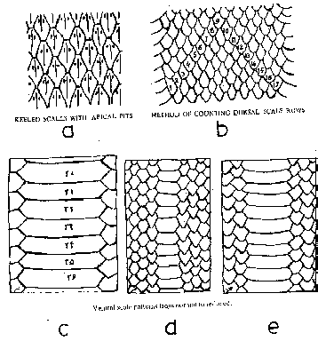
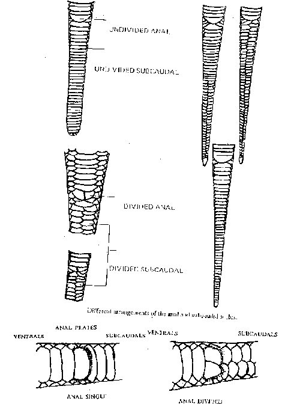
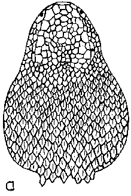
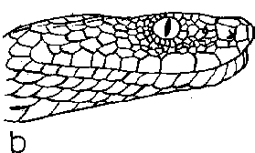
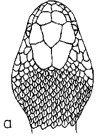
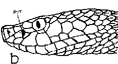
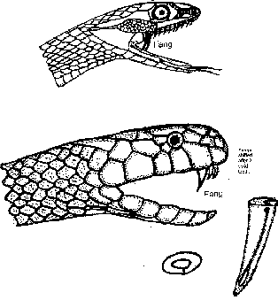
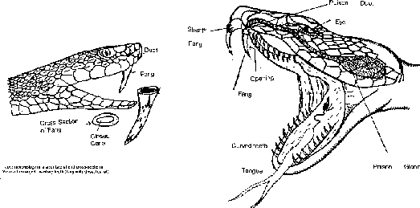
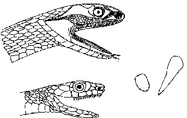

IDENTIFICATION OF SNAKES
Non poisonous or Poisonous ?
1.
Snakes are mainly identified by the structure and arrangement of their
body, tail and head scales .
2.
Scales on the back of a snake are roughly quadrilateral .
3.
Lateral or side scales are called "dorsals"
or "Costals". These
scales may be continuous or overlapping smooth rough keeled, polished, shining
dull, stiff, pitted or serrated
4.
Scales on vertebral column are known as
Vertebrals or Spinals .
5.
Scales or shields on belly are known as Ventrals, these may be small,
medium or may cover the entire belly.
5.
Anal scales are known as Vent-scales or anal
scales—May be single, double or rarely triple

Ventral scale patterns from normal to reduced. A. Keeled scales with apical pits. B. Method of counting Dorsal Scale rows

Different
arrangements of the anal and subcaudal scales.


Dorsal
and lateral views of the head of a viper ( poisonous snake)


Dorsal
and lateral views of the head of the pitviper

Cobra Naja naja. Tooth morphology in a cobra. With lateral and cross-sectonal views of enlarged maxillary tooth (fang with open groove.)

Tooth, morphology in a viper lateral and cross-sectional views of enlarged maxillary tooth (fang with closed canal).

General morphology of the teeth and salivary gland in a nonveomous snake.